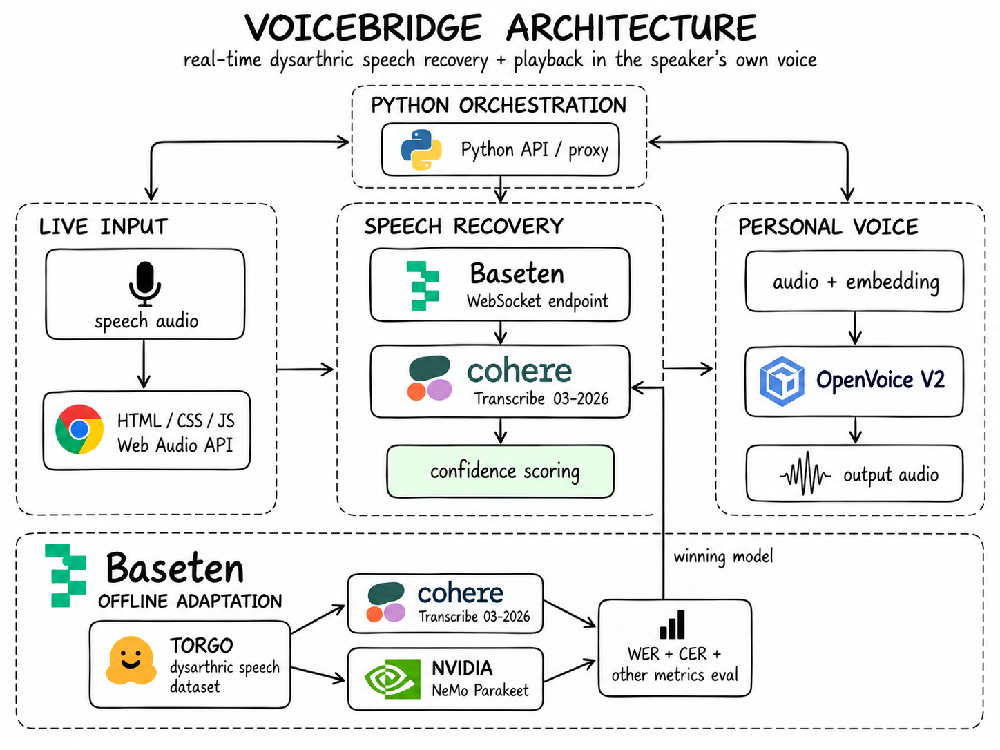

![]() VoiceBridge
VoiceBridge
Trained and powered by  Baseten
Baseten
VoiceBridgeTrained and powered by Baseten

0.879 confidence, accept. Below, ask.TORGO dysarthric speech adapted two candidate recognizers. Cohere won the only matched comparison, so it is the one the live path calls.
Only the encoder is adapted. Dysarthria is acoustic, and the encoder is 91.8% of the parameters. 3.4M weights trained, 0.166% of the model.
Voice conversion, not cloning. Cloning a dysarthric reference would reproduce the slurring. OpenVoice transfers timbre only.